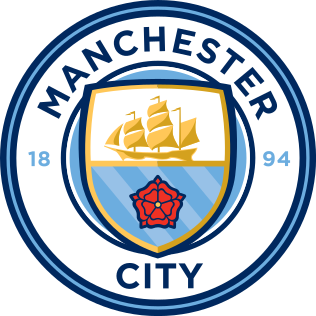

Man. City
Chelsea
El Chelsea se coronó campeón de la UEFA Champions League por segunda vez en su historia tras una actuación brillante ante el Manchester City en Oporto. Los de Thomas Tuchel maniataron a su rival y aprovecharon el solitario gol de Kai Havertz para tocar el cielo.
| Man. City | ESTADISTICAS | Chelsea |
|---|---|---|
| Ataque | ||
| 0 | GOLES | 1 |
| 7 | DISPAROS TOTALES | 8 |
| 1 | A PUERTA | 2 |
| 2 | A FUERA | 5 |
| 24 | BLOQUEADOS | 1 |
| 0 | AL PALO | 0 |
| 3 | SAQUES DE ESQUINA | 1 |
| Actuación | ||
| 58% | POSESIÓN (%) | 42% |
| 87% | PRECISIÓN EN EL PASE (%) | 81% |
| 617 | PASES INTENTADOS | 404 |
| 538 | PASES COMPLETADOS | 330 |
| 220.5 | DISTANCIA RECORRIDA (KM) | 111.6 |
| Defensa | ||
| 32 | BALONES RECUPERADOS | 40 |
| 11 | DUELOS | 14 |
| 1 | DISPAROS BLOQUEADOS | 4 |
| 5 | DESPEJES COMPLETADOS | 25 |
| Amonestaciones | ||
| 2 | TARJETAS AMARILLAS | 1 |
| 0 | TARJETAS ROJAS | 0 |
| 14 | FALTAS COMETIDAS | 13 |